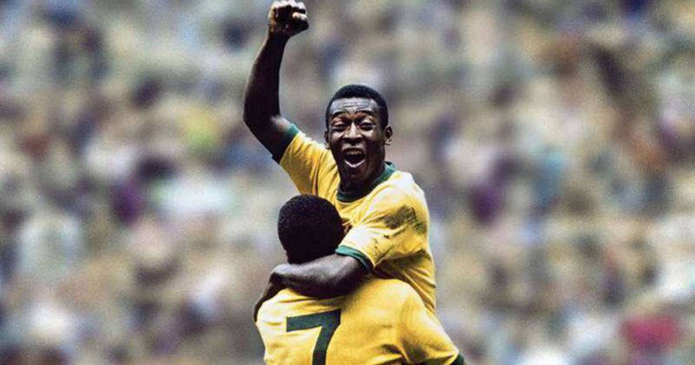
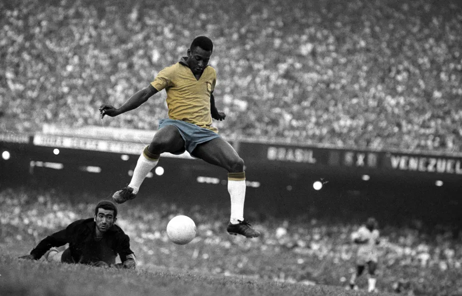
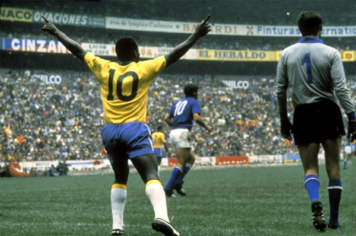

Pelé
"The King of Football"

Edson Arantes do Nascimento
- Edson Arantes do Nascimento, mais conhecido como Pelé, foi um futebolista brasileiro que atuou como atacante. Descrito como o "Rei do Futebol", é amplamente considerado como o maior atleta de todos os tempos.
- Em 2000, foi eleito Jogador do Século pela Federação Internacional de História e Estatísticas do Futebol (IFFHS) e foi um dos dois vencedores conjuntos do prêmio Melhor Jogador do Século da FIFA. Nesse mesmo ano, Pelé foi eleito Atleta do Século pelo Comitê Olímpico Internacional.
- De acordo com a IFFHS, é o segundo maior goleador da história do futebol em jogos oficiais, tendo marcado 765 gols em 812 partidas. No total foram 1283 gols em 1363 jogos (incluindo amistosos não-oficiais), um recorde mundial do Guinness. Durante sua carreira, chegou a ser durante um período o atleta mais bem pago do mundo.

Edson Arantes do Nascimento
- Pelé começou a jogar pelo Santos Futebol Clube aos quinze anos de idade, e pela Seleção Brasileira aos dezesseis. Durante sua carreira na Amarelinha, sagrou-se campeão de três edições da Copa do Mundo FIFA: 1958, 1962 e 1970, sendo o único a fazê-lo como jogador.
- Contando os gols oficiais, Pelé é, ao lado de Neymar, o maior goleador da história da Seleção Brasileira, com 77 gols em 92 jogos. Em clubes, ele é o maior artilheiro da história do Santos e os levou a várias conquistas, com destaque para duas Copas Libertadores da América e dois Mundiais Interclubes, vencidos em 1962 e 1963.
- Conhecido por conectar a frase "jogo bonito" ao futebol, a "ação eletrizante e a propensão a objetivos espetaculares" de Pelé fizeram dele uma estrela rapidamente, e sua equipe fez turnês internacionais, a fim de aproveitar ao máximo sua popularidade. Após se aposentar em 1977, tornou-se embaixador mundial do futebol e fez muitos trabalhos de atuação e comerciais. Em janeiro de 1995, foi nomeado ministro do esporte no governo Fernando Henrique Cardoso. Em 2010, foi nomeado presidente honorário do New York Cosmos.

Edson Arantes do Nascimento
- Com média de quase um gol por partida ao longo de sua carreira, Pelé era especialista em chutar a bola com qualquer um dos pés, além de antecipar os movimentos de seus oponentes em campo. Embora atuasse predominantemente como atacante, ele podia recuar e assumir um papel de playmaker, fornecendo assistências com sua visão e habilidade de passe.
- Considerado um jogador completo, também tinha como característica a qualidade no drible para passar pelos adversários. No Brasil, Pelé é aclamado como herói nacional por suas realizações no futebol e por seu apoio franco a políticas que melhoram as condições sociais dos pobres.
- Ao longo de sua carreira e aposentadoria, recebeu vários prêmios individuais e de equipe por seu desempenho em campo, suas conquistas recordes e seu legado no esporte.